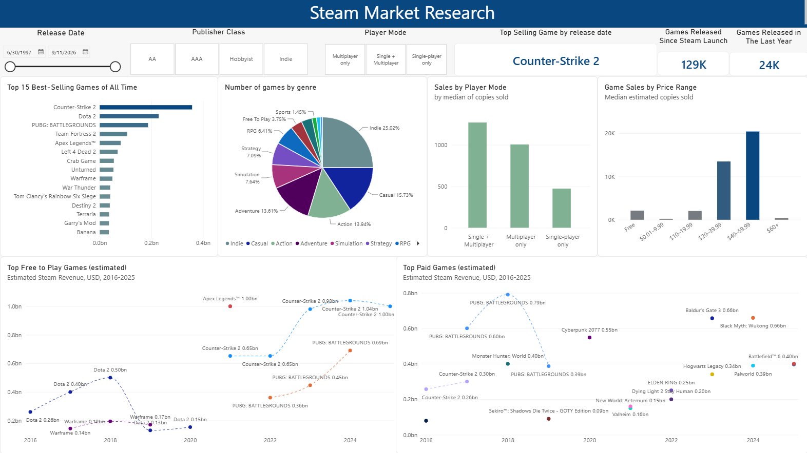

Steam Games Data and Market Analysis
Python • API Integration • Power BI
An end-to-end data analysis project combining Python data preparation and exploratory analysis with an interactive Power BI dashboard examining the Steam games market.
Project Overview
This project examines the Steam games market to identify patterns in game pricing, popularity, player engagement, and estimated copies sold. It also explores how market performance differs among indie, AA, and AAA publishers. The project combines Python-based data collection and preparation with an interactive Power BI dashboard.
Data Sources
The primary dataset was obtained from Kaggle and contained information about more than 140,000 Steam games. Additional market data, including estimated copies sold and publisher classifications, were retrieved from the Gamalytic API.
Python Data Preparation and Workflow
Python and Pandas were used to inspect, clean, and transform the original dataset. Columns containing genres, categories, and tags were converted from text representations into usable lists. API data were retrieved across multiple pages and merged with the original dataset using the Steam application ID.
The completed merged dataset contained 128,594 matched games. Exploratory analysis examined numerical correlations, pricing groups, publisher classes, genres, player modes, review scores, recommendations, copies sold, and estimated revenue.
Power BI Dashboard
The prepared dataset was used to build an interactive Power BI dashboard. The interactive dashboard allows users to compare market performance by publisher category, pricing model, genre, and individual game.

Results and Key Findings
The analysis showed that market performance varies considerably across publisher categories, pricing models, genres, and individual titles. AAA publishers accounted for many of the games with the highest estimated copies sold, while AA publishers formed the next strongest group. Indie games were far more numerous, but only a comparatively small number reached the sales levels of the strongest AA and AAA releases.
- Free-to-play games often supported large player communities, but price alone did not determine popularity or commercial success.
- Player engagement and estimated copies sold were concentrated among a relatively small number of highly successful titles.
- Genres, multiplayer features, publisher resources, and established franchises appeared to influence market performance alongside price.
- Publisher classification provided useful market context, but substantial performance differences remained within each publisher group.
Skills Demonstrated
- Python API extraction
- Data cleaning and validation with pandas
- Exploratory data analysis
- Power BI data modeling and dashboard development